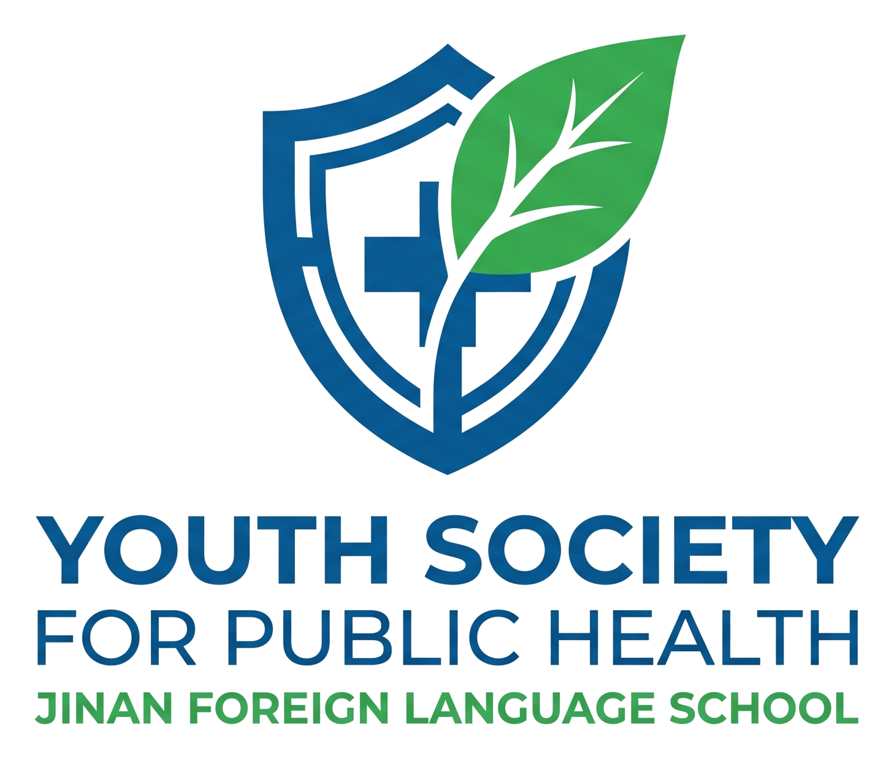

Tuberculosis prevention
Clear explanations of symptoms, transmission, prevention, treatment adherence, and stigma reduction.

YSPH-JNFLS
济南外国语学校青年公共卫生学会
A student-led public health society rooted in learning, prevention, research, and outreach.
YSPH-JNFLS is a student-led academic society at Jinan Foreign Language School. We study public health through reading, research practice, outreach, and peer education.
We are also a certified TB Prevention Hut recognized by the Chinese Anti-Tuberculosis Association under the China Association for Science and Technology, helping students and communities understand tuberculosis prevention with accuracy, clarity, and care.
As a TB Prevention Hut, YSPH-JNFLS supports evidence-based communication on tuberculosis prevention, helping students translate public health knowledge into accessible campus and community education.
Clear explanations of symptoms, transmission, prevention, treatment adherence, and stigma reduction.
Posters, short talks, classroom activities, and accessible summaries for school audiences.
Activities that connect evidence-based TB prevention with everyday health decisions.
Awareness activities and student-facing resources that make prevention easier to understand.
Executive Group / Founded YSPH-JNFLS and leads society strategy, public health initiatives, and external collaboration.
Outreach Group / Coordinates rural outreach, teaching materials, and field records.
Prevention Group / Develops tuberculosis education and awareness activities.
Research Group / Guides reading groups, survey design, briefs, and drafts.
Partnership Group / Builds relationships with teachers, families, and collaborators.
Publication Group / Maintains reports, visual communication, and website updates.